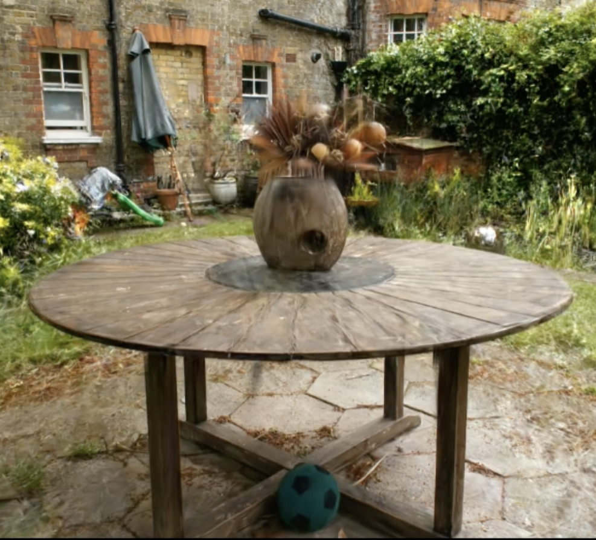
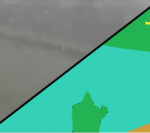
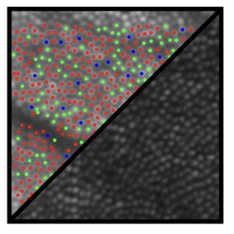
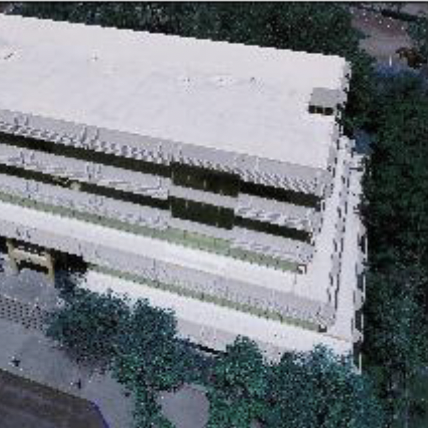
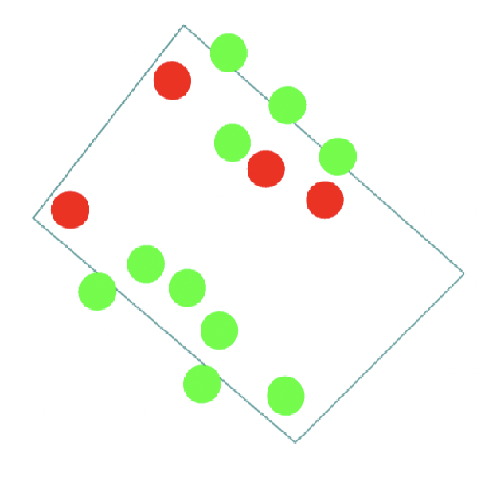

Representative/Recent papers are highlighted |
|

|
SparseGS: Real-Time 360° Sparse View Synthesis using Gaussian Splatting
Haolin Xiong*,
Sairisheek Muttukuru*,
Rishi Upadhyay,
Pradyumna Chari,
Achuta Kadambi
3DV, 2025
PDF /
project page
We integrate 3D Gaussian Splatting with depth regularization and diffusion priors to enable 360° novel view synthesis from just 12 views.
|
|

|
WeatherProof: A Paired-Dataset Approach to Semantic Segmentation in Adverse Weather
Blake Gella*,
Howard Zhang*,
Rishi Upadhyay,
Tiffany Chang,
Matt Waliman,
Yunhao Ba,
Alex Wong,
Achuta Kadambi
arXiv, 2023
PDF /
project page
We introduce the first paired semantic segmentation dataset in adverse conditions and show that techniques that leverage this paired nature can significantly improve performance.
|
|
|
Enhancing Diffusion Models with 3D Perspective Geometry Constraints
Rishi Upadhyay,
Howard Zhang,
Yunhao Ba,
Ethan Yang,
Blake Gella,
Sicheng Jiang,
Alex Wong,
Achuta Kadambi
ACM TOG, SIGGRAPH Asia, 2023
PDF /
Code /
Project Page
We propose a loss function for latent diffusion models that improves the perspective accuracy of generated images, allowing us to create synthetic data that helps improve SOTA monocular depth estimation models.
|
|

|
Characterizing Cone Spectral Classification by Optoretinography
Vimal Prabhu Pandiyan,
Sierra Schleufer,
Emily Slezak,
James Fong,
Rishi Upadhyay,
Austin Roorda,
Ren Ng,
Ramkumar Sabesan
Biomed. Opt. Express, 2022
PDF
We characterize cone classification by ORG. Personally worked on the Retina Map Alignment Tool.
|
|

|
Scaling Building Energy Audits through Machine Learning Methods on Novel Drone Image Data
Reshma Singh,
Samuel Fernandes,
Anand Krishnan Prakash,
Paul Mathew,
Jessica Granderson,
Colman Snaith,
Rahul Pusapati,
Prakash Jadhav,
Avideh Zakhor,
Rishi Upadhyay,
Ozgur Gonen,
Harry Bergmann
Technical Report, Lawrence Berkeley National Labratory, 2022
PDF
We create an automated tool to estimate building energy efficiency through drone and thermal imaging.
|
|

|
Indoor 3D Interactive Asset Detection Using a Smartphone
Revekka Kostoeva, Rishi Upadhyay, Yersultan Sapar, Avideh Zakhor
ISPRS, 2019
PDF
We use a smartphone, AR techniques, and object classifiers to create a system to automatically detect and map objects of interest in a 3D scene.
|
| Course |
School |
Semester/Quarter |
Title |
| EE 149, Foundations of Computer Vision |
UCLA |
Winter 2023 |
TA |
| EE 239AS, Computational Imaging |
UCLA |
Fall 2023 |
TA |
| CS 184, Computer Graphics & Imaging |
UC Berkeley |
Spring 2022 |
Head TA |
| CS 184, Computer Graphics & Imaging |
UC Berkeley |
Spring 2021 |
Head TA |
| CS 170, Efficient Algorithms & Intractable Problems |
UC Berkeley |
Fall 2020 |
Reader |
| CS 184, Computer Graphics & Imaging |
UC Berkeley |
Summer 2020 |
TA |
| CS 184, Computer Graphics & Imaging |
UC Berkeley |
Spring 2020 |
TA |
|
{kind=link}